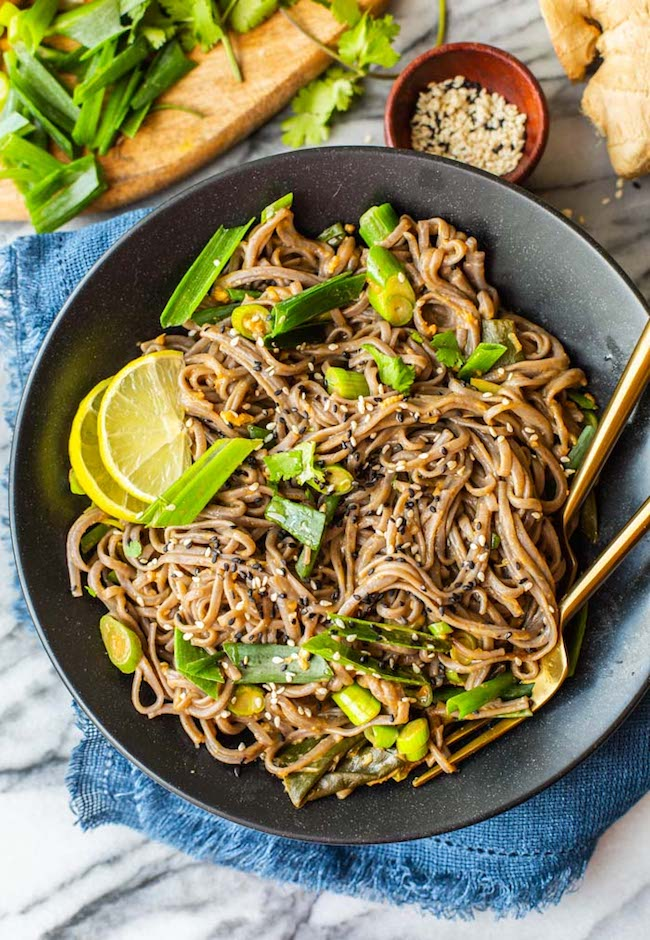

Spring Onion Peanut Noodles 🍜🥜
These peanut noodles cook up so quickly they make for a great last minute meal when you want something fast and
fairly healthy.
You can enjoy them as a simple noodle dish all on its own or as a side to a large
meal.
You can even spruce up the noodles with some added protein like chicken or tofu.

Recipe
Course: Main
Cuisine: Chinese
Preparation Time: 15 minutes
Ingredients:
- 1 tbsp (15 ml) toasted sesame oil
- 2 large cloves garlic, minced
- 1 tbsp fresh ginger, minced
- 5 large spring onions
- 2-3 tsp sriracha/ chili paste
- 2 tbsp (30 ml) gluten free soy sauce
- 1 tbsp (15 ml) maple, agave, honey or sugar (or maple/agave for vegan option)
- 1 tbsp (16 g) smooth, natural peanut butter
- 1 tbsp (15 ml) rice vinegar or lime juice
- 1/2 cup (120 ml) water
- 10 oz Gluten Free Soba Noodles (or rice noodles)
- 1 tbsp Sesame seeds for topping, black and/or white
Instructions:
- Prep the green onions: remove the root ends of the green onions and discard. Then cut the green onions in
half separating the light, hard bottoms from the dark green/leafy tops. Chop the lighter bottoms until into
small pieces (these will be cooked first) and slice the dark green tops of the green onions lengthwise into
1 inch long pieces.
- Cook noodles according to package instructions. Soba noodles will usually cook in boiled water about 7
minutes. Once cooked, pour the noodles into a colander and run under cold water to remove the starch and
make the noodles less sticky. Set aside.
- Warm the sesame oil in a large skillet or wok over a medium. Add the garlic, ginger and chopped green onion
pieces to the oil and sauté for 1 minute until fragrant.
- Add the sriracha, soy sauce, sweetener, vinegar and peanut butter to the pan and stir into a thick paste.
- Stir in the water and bring to a gentle simmer. Let the mixture cook until it thickens - about 1-2 minutes.
Turn off the heat.
- Add the noodles to the pan along with the sliced green onion tops. Toss in sauce and coat the noodles well.
- Serve topped with sesame seeds and enjoy hot or cold.
Reference: Taken from here
Back to Main page